f) Galería
Curvas y Fractales Clásicos

Curva del Dragón
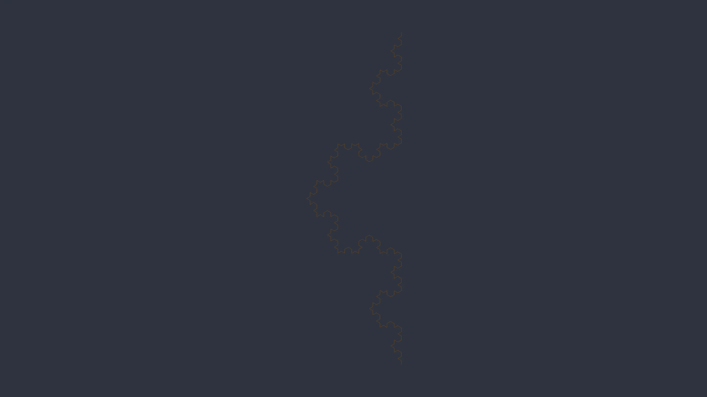
Copo de Koch
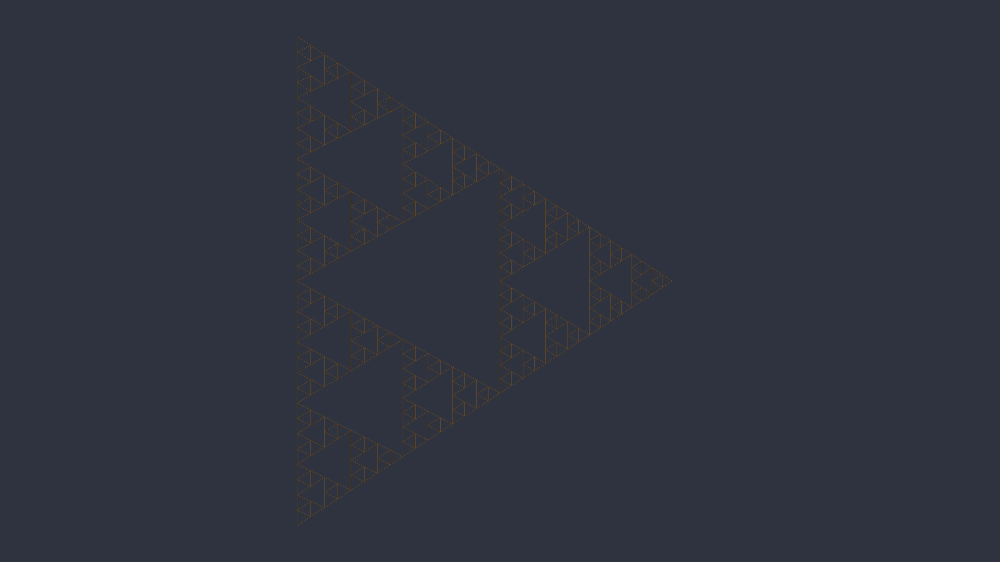
Triángulo de Sierpinski
f) Galería
Estructuras Botánicas 3D

Pino 3D
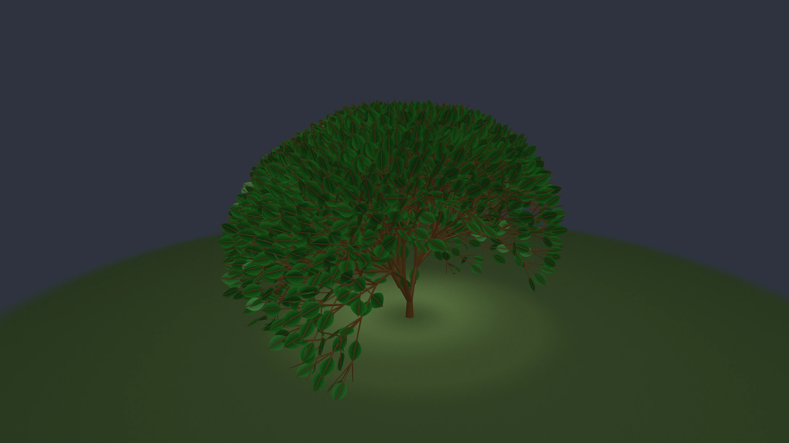
Roble
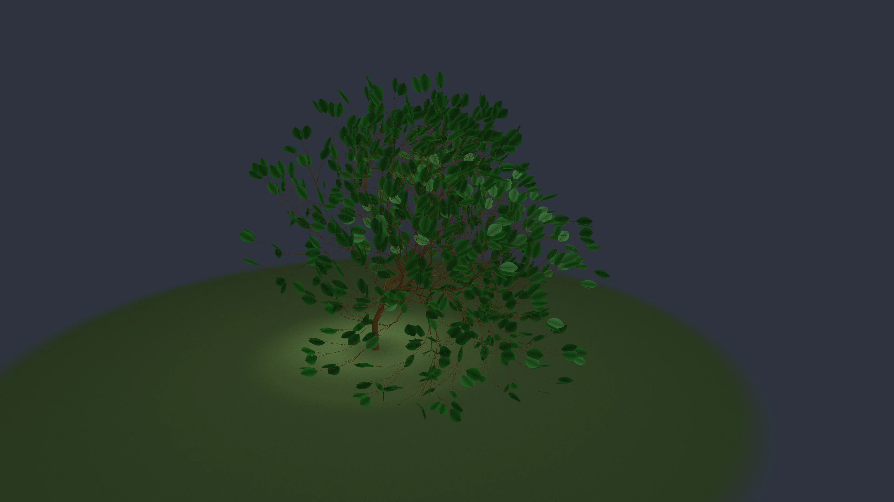
Sauce Llorón
f) Galería
Diversidad Morfológica

Cerezo en Flor
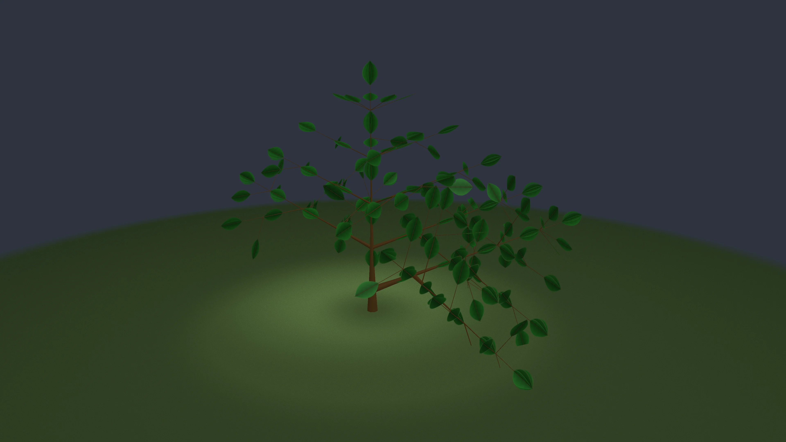
Bonsái
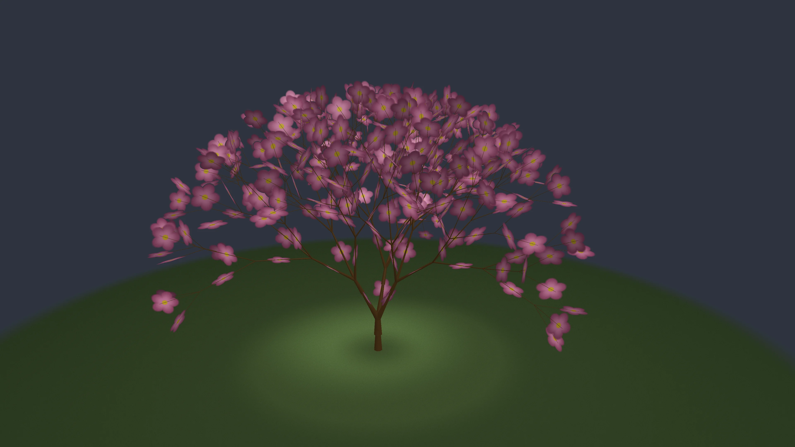
Palmera
f) Galería
Evolución por Generaciones
Cada incremento en el número de generaciones produce una cadena exponencialmente más larga y una estructura visualmente más compleja.
Esto simula el crecimiento natural: desde una semilla simple hasta un organismo complejo, siguiendo las mismas reglas inmutables.
Secuencia de Crecimiento
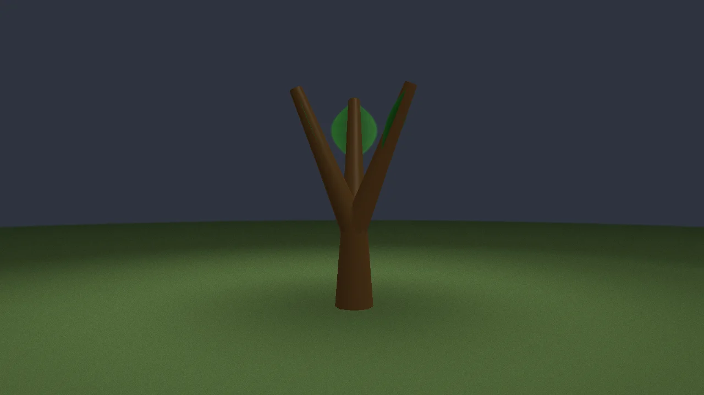
 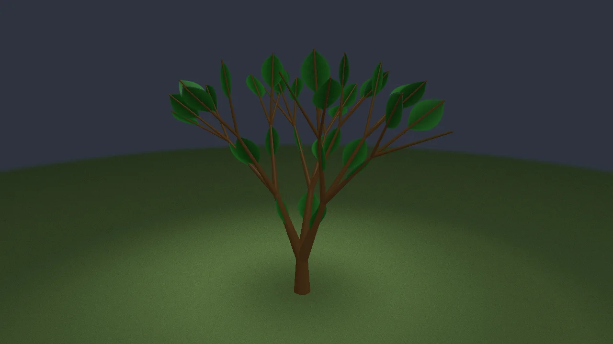
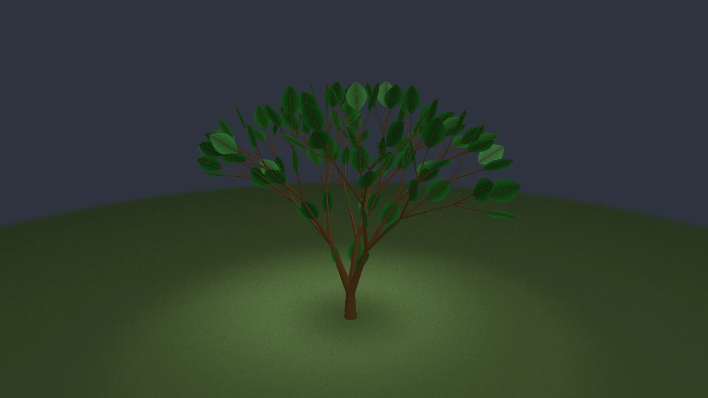
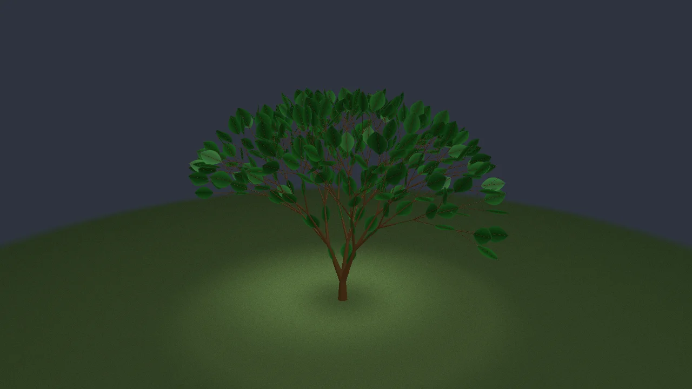
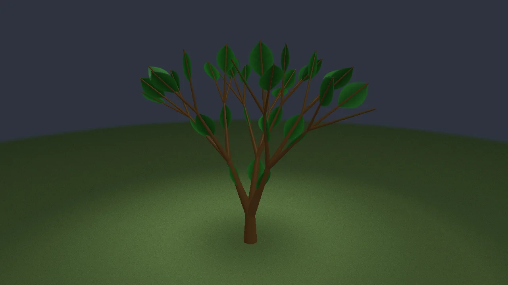
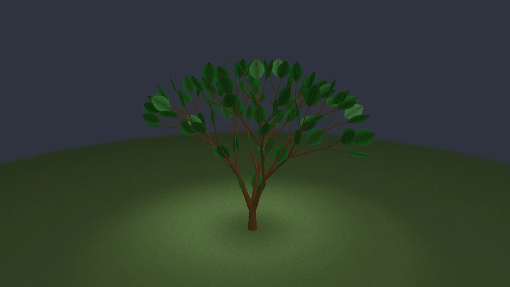
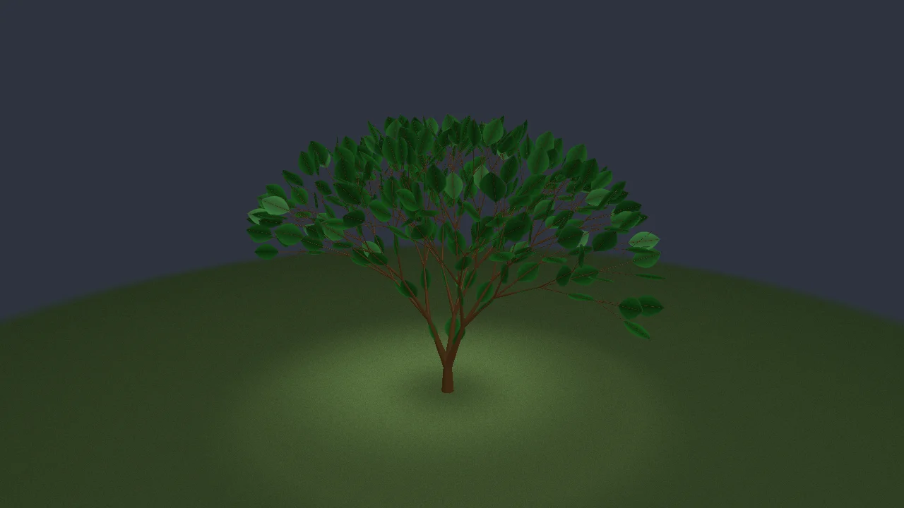
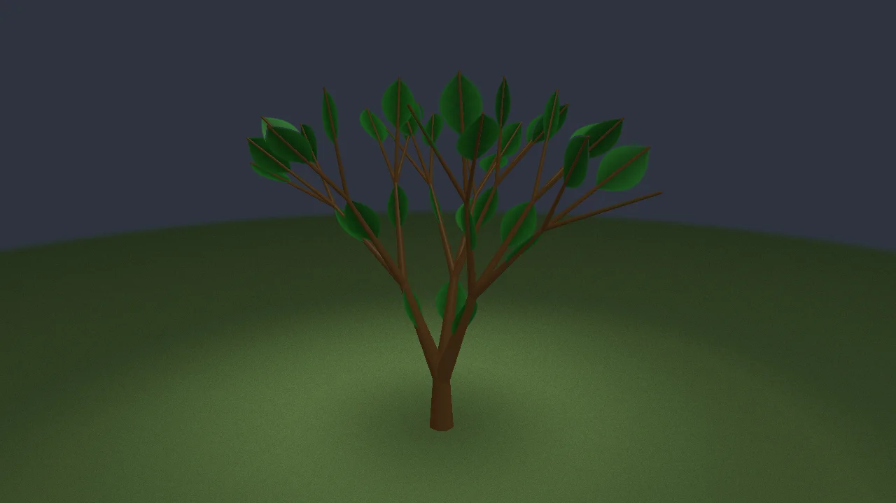
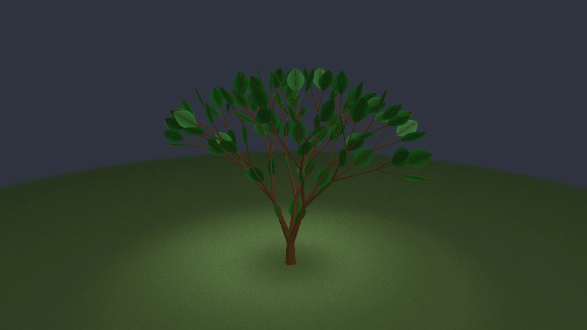
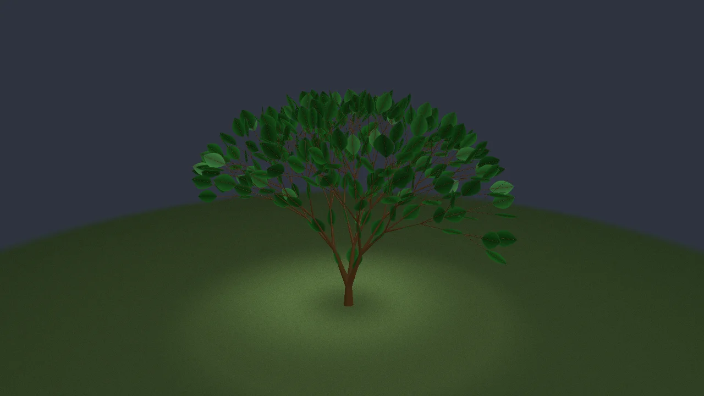
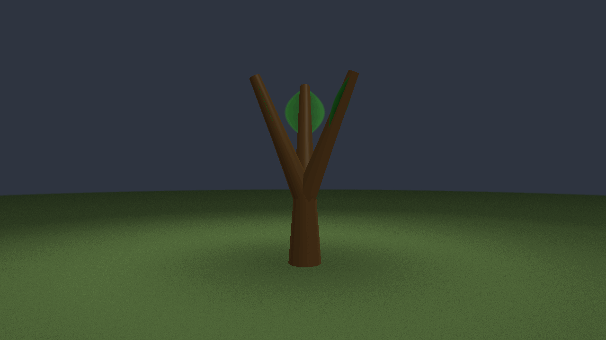
Crecimiento Animado
Demostración
Demo en Vivo
Visualizar axiomas, reglas, ángulos y observar los cambios instantáneamente.
Fin
Conclusión
Desde reglas simples emerge la complejidad de la naturaleza.
Los L-Systems demuestran que la belleza de las plantas puede ser capturada y recreada mediante algoritmos.
Gracias
Jose Julian Parra Virgen
Graficación — UABC 2025